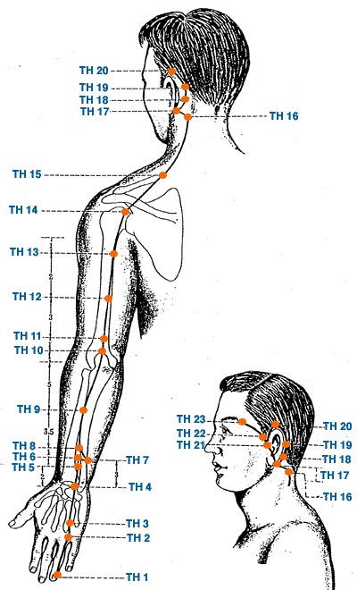

|

|
Meridian Point : TH-1
Location: .1 cun posterior to the corner of the nail on the ulnar side of the ring finger.
English Name: Passage Hub
Pinyin Name: Guanchong
Actions & Effect:
Similar to TH 3 which is used more clinically.
Disease
Sore throat, headache, redness of the eye, deafness, tinnitus, high fever
Meridian Point : TH-2
Location:(.5 cun) proximal to the margin of the web between the ring and the little fingers, in a depression when fist is clenched at the border of the red and white skin.
English Name: Humor Gate
Pinyin Name: Yemen
Actions & Effect:
Similar to TH 3 which is used more clinically
Disease
Headache, malaria, sore throat, redness of the eye, deafness, numbness of the fingers
Meridian Point : TH-3
Location: With fist clenched on dorsum of the hand between the 4th and 5th metacarpal bones in a depression proximal to the 4th Metacarpalphalangeal joint.
English Name: Central Islet
Pinyin Name: Zhongzhu
Actions & Effect:
Ear Problems of any etiology such as excess tinnitus, especially those arising from a LV issue such as LV Qi Stagnation or LV Yin Deficiency.
Distal point for temporal headaches, shoulder a/or upper back pain, pain a/or inflammation in the throat.
Eye diseases with GB 37.
Disease
Headache, dizziness, redness of the eye, tinnitus, deafness, sore throat, pain in the shoulder, back, elbow and arm, fingers unable to extend
Meridian Point : TH-4
Location: On transverse crease of dorsum of wrist in a depression on the ulnar side of the extensor digitorum communis tendon.
English Name: Yang Pool
Pinyin Name: Yangchi
Actions & Effect:
Dorsal wrist issues such as strains, sprains or subluxations.
Wasting & thirsting disorder, regulates water metabolism, alleviates dry mouth a/or thirst.
Moxa to tonify the Yang of the body
Disease
Tinnitus, deafness, sore throat, pain of wrist joint
Meridian Point : TH-5
Location: 2 cun above TH 4 between the radius and the ulna on the TH 4 - TH 10 line " Japanese Discrepancy "
English Name: Outer Pass
Pinyin Name: Waiguan
Actions & Effect:
Beginning exterior conditions, tonify for wind-cold, cold-damp & sedate for wind-heat, fever.
Headache from exterior wind as well as migraines and headaches in any area especially with stiffness or pain in the posterior and lateral aspects of the neck.
Upper limb disorders including the elbow, forearm, wrist and hand.
Shaoyang stage diseases - alternating fever and chills, etc.
Luo connecting point of the TH connects to the PC, TH 5 & PC 6 as master points of the Yang Wei and Yin Wei respectively can effect the balance of yin and yang in the body. If right pulse is stronger than the left (more Qi than Blood) disperse TH 5 & tonify PC 6 and vice versa
Disease
Migraine, facial paralysis, tinnitus, deafness, common cold
Meridian Point : TH-6
Location: 3 cun above TH 4 between the radius and ulna on the radial side of the extensor digitorum muscle on the TH 4 and tip of the olecranon line.
English Name: Branch Ditch
Pinyin Name: Zhigou
Actions & Effect:
Effects the Triple Warmer in the following ways:
Lower: Constipation due to stagnation and heat in the body.
Middle: Issues with the chest & hypochondrium, often used with GB 34 for chest & rib pain, also "sudden turmoil disorder" (vomiting & diarrhea).
Upper: Febrile diseases with no sweating, eye redness & pain, ear pain, inflammation.
Disease
Sudden loss of voice, tinnitus, deafness, aching pain in shoulder and back, constipation
Meridian Point : TH-7
Location: Level with and one finger width from TH 6 on the radial border of the ulna.
English Name: Convergence and Gathering
Pinyin Name: Huizong
Actions & Effect:
Local Point.
Disease
Deafness and pain in upper limbs
Meridian Point : TH-8
Location: 4 cun above TH 4 between the radius and ulna.
English Name: Three Yang Connection
Pinyin Name: Sanyangluo
Actions & Effect:
Sudden deafness, acute or chronic loss of voice, apahsia, combine with HT 5 & CV 23.
Disease
Deafness, toothache, sore throat, sudden loss of voice and pain in upper limbs
Meridian Point : TH-9
Location: 7 cun above TH 4, 5 cun below the olecranon, between the radius and ulna on the ulnar side of the forearm.
English Name: Four Rivers
Pinyin Name: Sidu
Actions & Effect:
Local Point.
Disease
Migraine, deafness
Meridian Point : TH-10
Location: 1 cun superior to the olecranon process in a depression with elbow flexed.
English Name: Celestial Well
Pinyin Name: Tianjing
Actions & Effect:
Transforms phlegm, reduce lymph swellings, thyroid disorders.
Elbow pain, tendonitis.
One-sided headache, migraines.
Useful for depression a/or anxiety, especially with chest pain or oppression, angina a/or palpitations.
Epilepsy (phlegm obstruction), possibly mania as well.
Differentiation:
TH 5 is for headache anywhere whereas TH 10 is specifically for one-sided headaches
Disease
Migraine, deafness, spasmonic pain in elbow and arm, epilepsy
Meridian Point : TH-11
Location: 1 cun above TH 10 with elbow flexed.
English Name: Clear Cold Abyss
Pinyin Name: Qinglengyuan
Actions & Effect:
Local Point.
Disease
Headache, yellowness of the eyes, pain of the upper extremities
Meridian Point : TH-12
Location: Midway between TH 11 and TH 13 on line joining the olecranon and TH 14.
English Name: Dispersing Riverbed
Pinyin Name: Xiaolou
Actions & Effect:
Local Point.
Disease
Headache, neck rigidity, pain of the shoulder and back
Meridian Point : TH-13
Location: 3 cun below TH 14 on the posterior border of the deltoid muscle on line joining TH 14 and the olecranon.
English Name: Upper Arm Convergence
Pinyin Name: Naohui
Actions & Effect:
Local Point
Disease
Spasm and pain of the shoulder and arm
Meridian Point : TH-14
Location: On shoulder, posterior to LI 15, in a depression inferior and posterior to the acromion when arm is abducted.
English Name: Shoulder Bone Hole
Pinyin Name: Jianliao
Actions & Effect:
Shoulder problems, especially those involving the lateral or posterior aspects of the shoulder
Disease
Pain and limitation of the shoulder and arm
Meridian Point : TH-15
Location: Midway between GB 21 and SI 13 on the superior angle of the scapula.
English Name: Celestial Bone Hole
Pinyin Name: Tianliao
Actions & Effect:
Local Point.
Disease
Meridian Point : TH-16
Location: Directly below mastoid process, level with the mandibular angle and on the posterior border of the SCM muscle (in line with SI 17 and GV 15).
English Name:Celestial Window
Pinyin Name: Tianyou
Actions & Effect:
Local Point.
Tong Ren/Tam Healing System: Used to effect the circulation within the occipital artery and the vertebral artery. Useful for occipital issues, glaucoma, etc.
Falls into the category of Window of the Sky points within the Tam Healing system.
Disease
Meridian Point : TH-17
Location: Posterior to lobule of ear in depression between the mandible and mastoid process.
English Name: Wind Screen
Pinyin Name: Yifeng
Actions & Effect:
Wind problems deriving from internal or external sources, Bell's palsy.
Ear problems, tinnitus, deafness, acute earache due to wind cold
Disease
Facial paralysis, tinnitus, deafness, toothache, hiccup
Meridian Point : TH-18
Location: In the center of the mastoid process at the junction of the middle and lower third of curve (TH 17 - TH 20) posterior to helix.
English Name: Spasm Vessel
Pinyin Name: Qimai
Actions & Effect:
Local Point.
Disease
Headache, tinnitus, deafness
Meridian Point : TH-19
Location: Posterior to ear at junction of the upper and middle third of curve (TH 17 - TH 20) behind curve.
English Name: Skull Rest
Pinyin Name: Luxi
Actions & Effect:
Local Point.
Disease
Headache, tinnitus, deafness
Meridian Point : TH-20
Location: Directly above ear apex within hairline.
English Name: Angle Vertex
Pinyin Name: Jiaosun
Actions & Effect:
Local Point.
Disease
Migraine, mumps, neck rigidity, tinnitus, deafness, cataract, toothache
Meridian Point : TH-21
Location: Anterior to the supratragic notch and behind the posterior border of the condyloid process of the mandible with the mouth open.
English Name: Ear Gate
Pinyin Name: Ermen
Actions & Effect:
Ear problems of an excess or deficient nature, tinnitus, deafness, earache.
TMJ problems, upper jaw toothache, combine with ST 6 & ST 7
Disease
Tinnitus, deafness, toothache and swelling of cheeks
Meridian Point : TH-22
Location: Anterior and superior to TH 21 level with the root of the auricle on posterior border of hairline of the temple where superficial temporal artery passes.
English Name: Harmony Bone Hole
Pinyin Name: Erheliao
Actions & Effect:
Local Point
Disease
Headache, tinnitus
Meridian Point : TH-23
Location: In a depression at the lateral end of the eyebrow.
English Name: Silk Bamboo Hole
Pinyin Name: Sizhukong
Actions & Effect:
Eye pain, redness, swelling, twitching, drooping eyelid.
Liver Wind or Liver Fire headache, combine with local points
Disease
Headache, dizziness, redness and swelling and pain of the eye, twitching of the eyelid, toothache, epilepsy
|